Creemos que un diente natural siempre merece una oportunidad. Somos el principal centro de referencia en endodoncia avanzada, retratamientos y microcirugía del Norte Chico.
Agenda tu evaluación clínica directa y salva tu diente con tecnología microscópica.
Agendar por WhatsAppDeriva casos complejos y mantente informado del estado de tu paciente en tiempo real.
Derivar por WhatsApp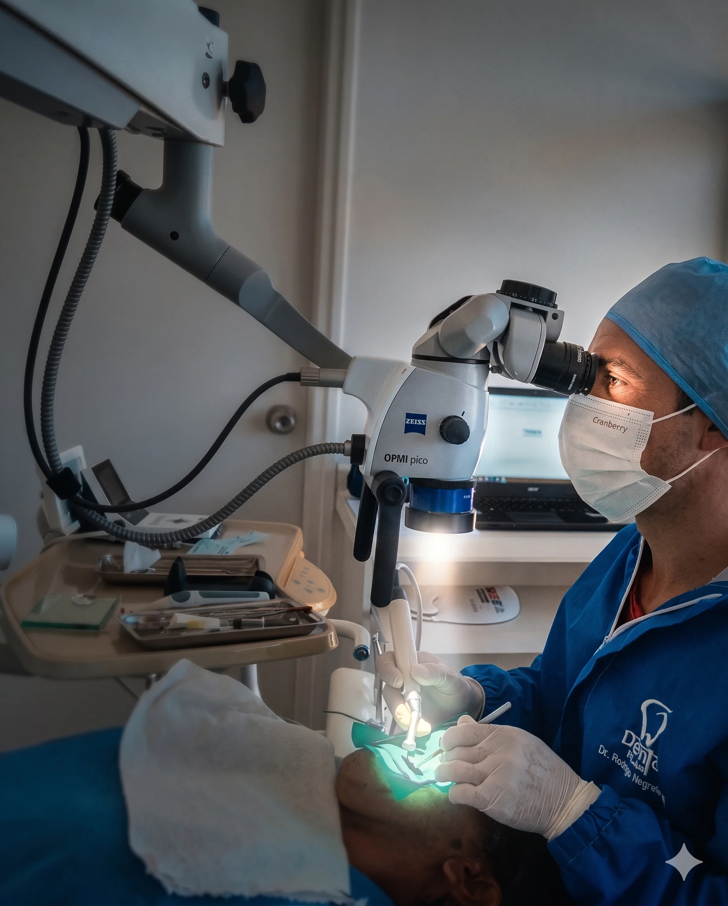
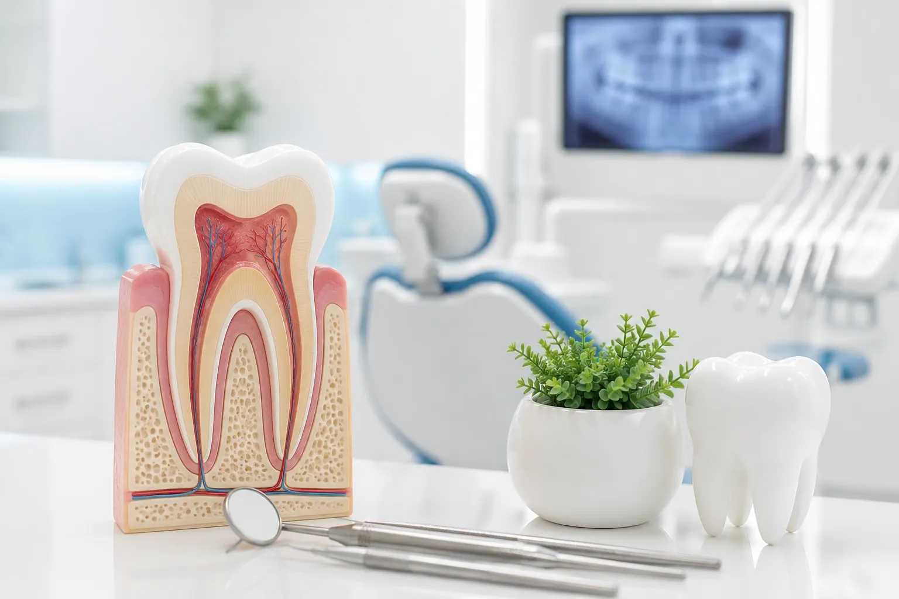
IRE nace con el propósito de convertirse en el centro de referencia líder dedicado exclusivamente a la conservación de piezas dentales mediante técnicas de vanguardia.
Integramos de manera sinérgica la **experiencia clínica avanzada**, la **tecnología de microscopía de última generación**, la **evidencia científica rigurosa** y un constante compromiso con la **formación continua**.
Atendemos pacientes particulares y derivados desde La Serena, Coquimbo, Ovalle, Vallenar y todo el Norte Chico, devolviendo la tranquilidad y la salud bucal a través de procedimientos indoloros y altamente predecibles.
Visualización extrema que permite tratar conductos imperceptibles a simple vista.
Rigurosos estándares de esterilización y bioseguridad en endodoncia.
Dedicación exclusiva en el tratamiento avanzado de conductos y microcirugía endodóntica compleja bajo magnificación microscópica.
El **Dr. Rodrigo Negrete** es un destacado cirujano dentista con especialización exclusiva en **Endodoncia y Microcirugía Apical**, enfocado en la conservación y recuperación de piezas dentales con daño severo o previamente desahuciadas.
A la cabeza del **Instituto Regional de Endodoncia (IRE)**, lidera un equipo que combina la precisión clínica con los más estrictos estándares de bioseguridad, convirtiendo las endodoncias complejas en procedimientos cómodos y de altísima tasa de éxito biológico.
Su enfoque de vanguardia lo ha posicionado como el especialista de referencia y derivación preferente por colegas del área médica y odontológica en toda la Región de Coquimbo y el Norte Chico.
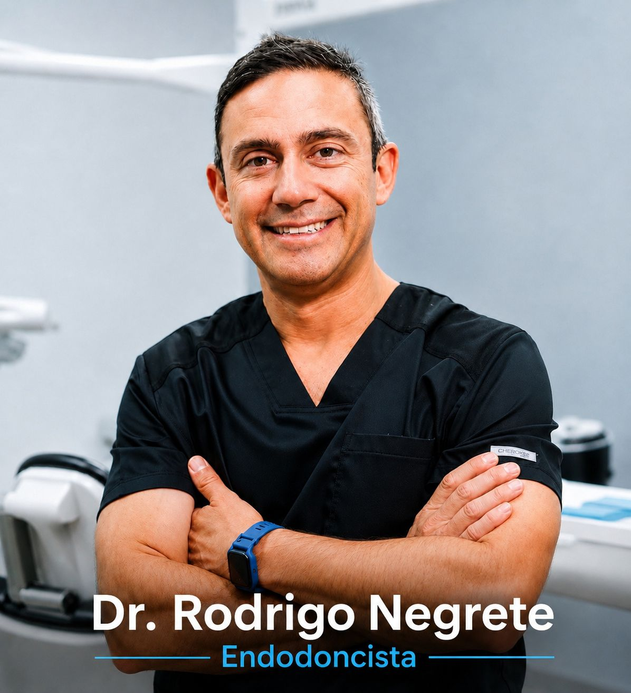
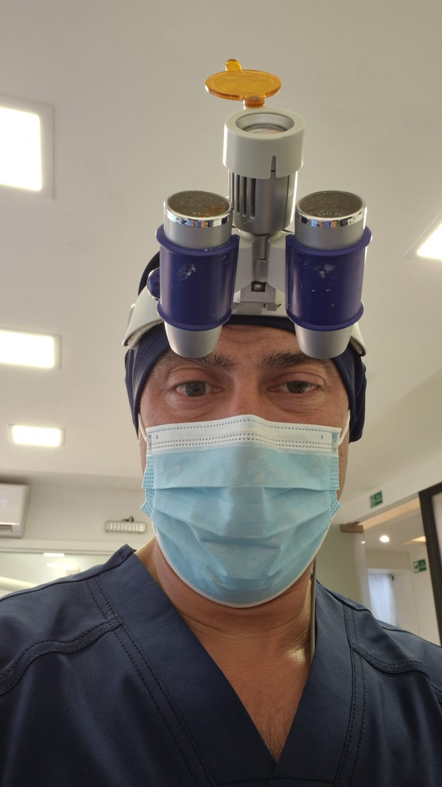
No somos una clínica odontológica general. Nos concentramos exclusivamente en salvar tus dientes a través de procedimientos especializados y de alta complejidad.
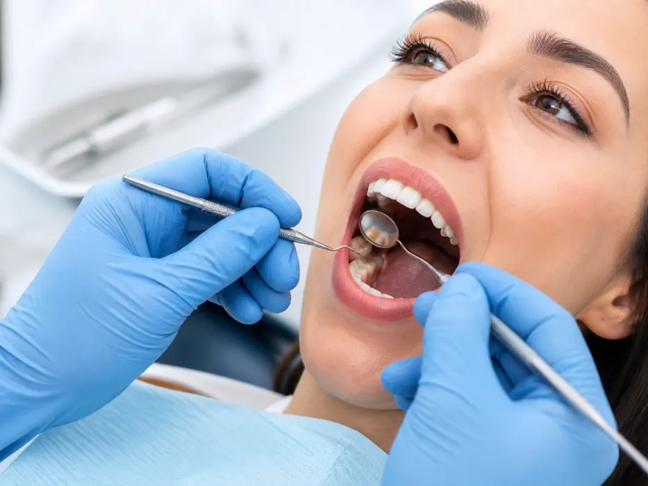
Tratamiento y desinfección interna de piezas con daño pulpar severo (infecciones, dolor agudo o caries profundas) para conservar el diente natural.
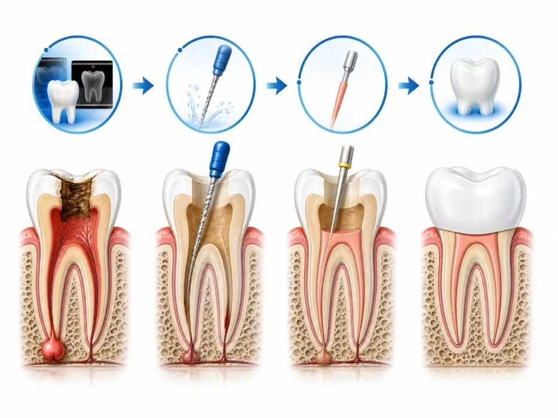
Reintervención en piezas dentarias con tratamientos de conducto previos deficientes, con dolor persistente, quistes o que han vuelto a infectarse.
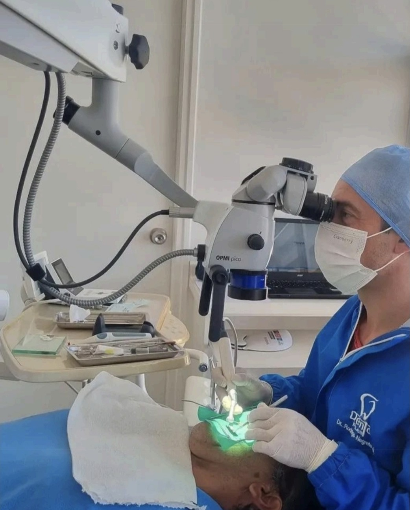
Procedimiento quirúrgico mínimamente invasivo realizado bajo magnificación extrema para remover infecciones del ápice de la raíz no resueltas convencionalmente.
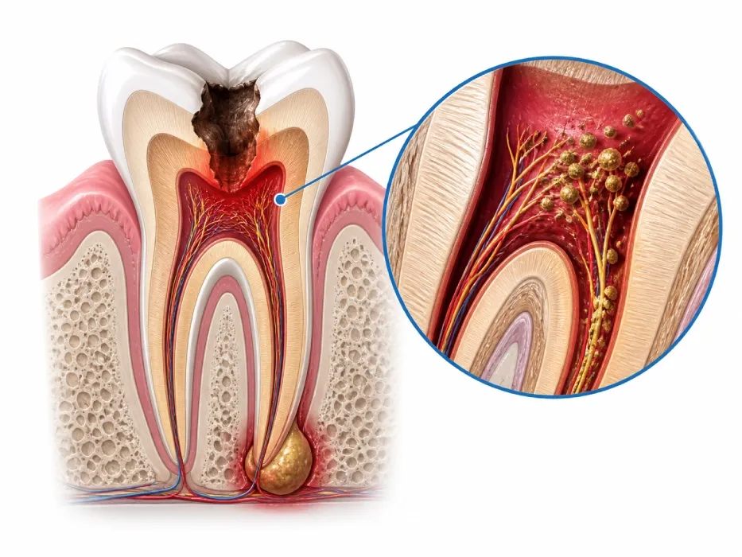
Evaluación rigurosa de piezas dentales complejas con diagnósticos confusos o dolor persistente para brindar claridad y un plan de acción confiable.
Evaluación avanzada de viabilidad para dientes previamente sentenciados a exodoncia. En IRE buscamos y aplicamos soluciones para evitar la pérdida dental.
Espacios especialmente diseñados para albergar tecnología endodóntica avanzada y entregar la mejor experiencia clínica de preservación dentaria.
Nuestros boxes clínicos están optimizados para el uso constante de microscopía y magnificación extrema. Hemos cuidado minuciosamente el espectro lumínico y la distribución de los equipos odontológicos para asegurar la máxima ergonomía clínica y una bioseguridad del 100%.
Mobiliario y distribución adaptados para la concentración absoluta del especialista.
Protocolos e infraestructura diseñados para la prevención efectiva de infecciones.
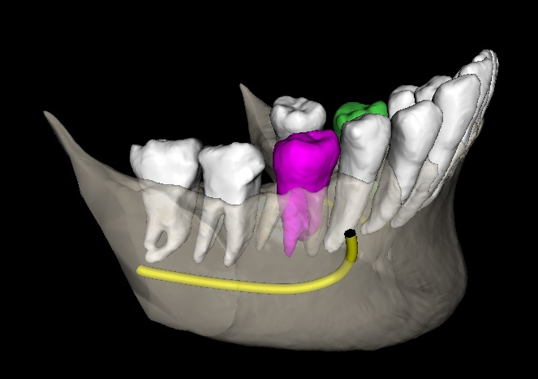
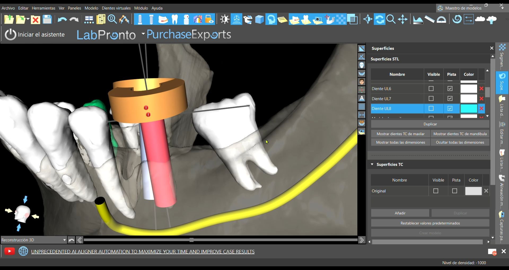
No realizamos odontología general. Nuestra misión exclusiva es preservar dientes naturales mediante tratamientos altamente especializados, diagnósticos precisos de alta resolución y de vanguardia, y protocolos estrictamente basados en evidencia científica.
Manifiesto IRE: Creemos que un diente natural tiene un valor biológico, funcional y emocional que merece ser preservado. Trabajamos para acercar una endodoncia de excelencia a la Región de Coquimbo y al Norte Chico, apoyando a pacientes y colegas mediante tecnología, ciencia y formación continua.
Queremos ser la extensión de tu consulta para el manejo de casos complejos de endodoncia, retratamientos y microcirugía.
Envía los datos del paciente y el caso directamente a través de nuestro acceso rápido de WhatsApp.
Realizamos estrictamente el procedimiento solicitado (endodoncia, cirugía, etc.). No hacemos tratamientos generales.
Te enviamos reportes radiográficos y clínicos detallados al inicio, durante y al finalizar la intervención.
El paciente retorna a tu consulta inmediatamente terminado el tratamiento para su restauración definitiva.
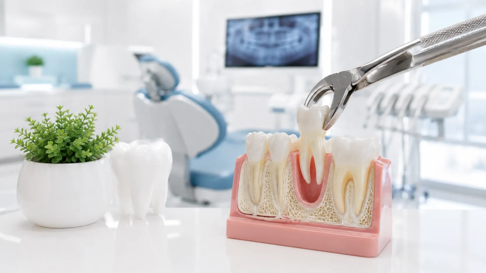
Buscamos transformarnos en un espacio de formación, observación clínica en vivo y actualización profesional para colegas y odontólogos interesados en la endodoncia moderna.
Consultar programas de observación →Estamos disponibles para responder tus dudas y coordinar citas de forma rápida y moderna.
Av. El Santo 1646, Piso 2 (Dentro de Ibelle)
La Serena, Región de Coquimbo
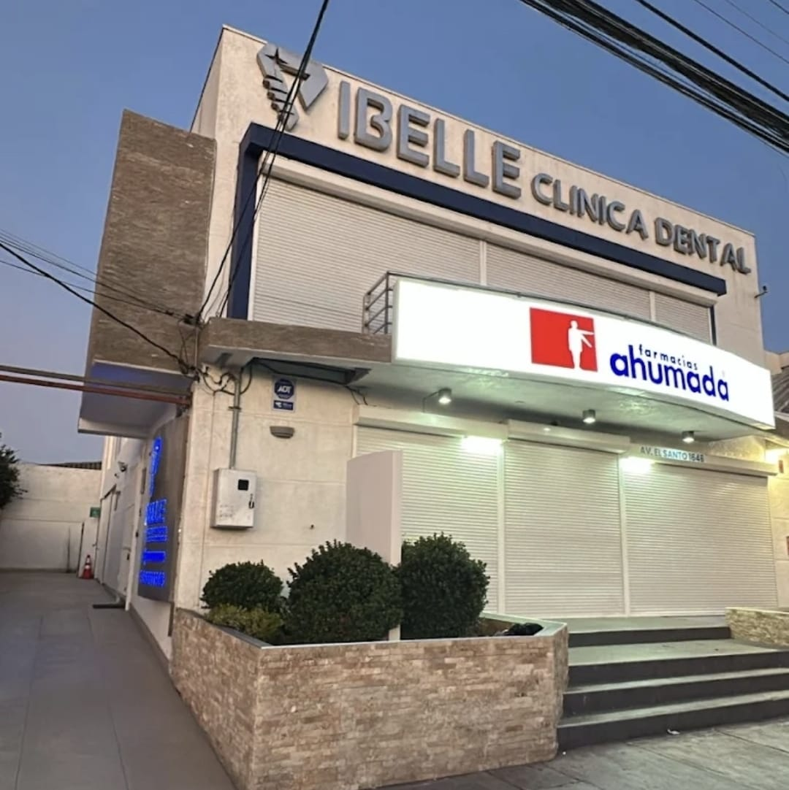
Nuestras instalaciones están localizadas en el segundo piso, ofreciendo accesos seguros y de alta conectividad en Av. El Santo, La Serena.